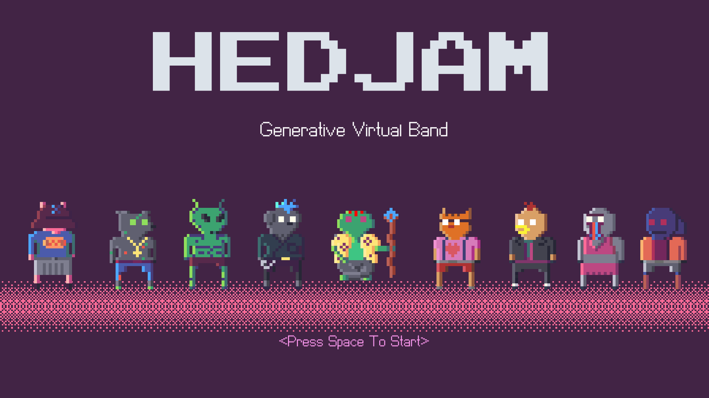
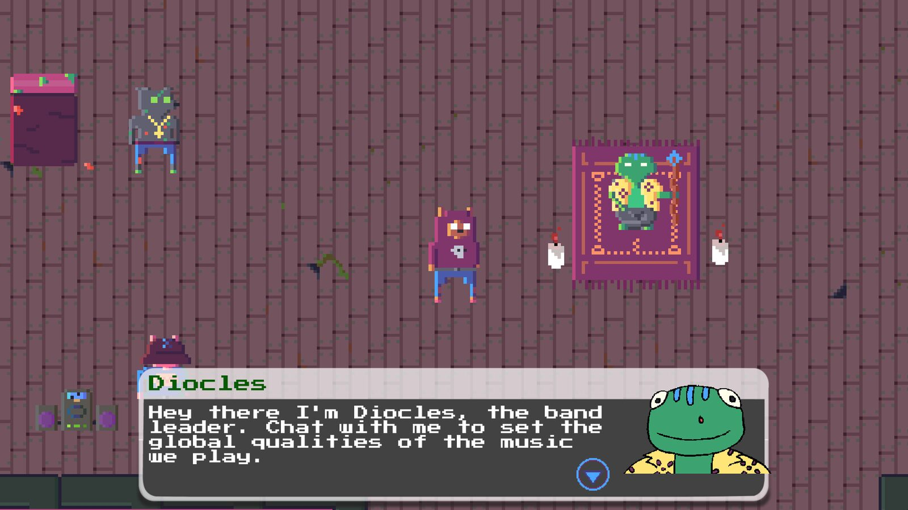
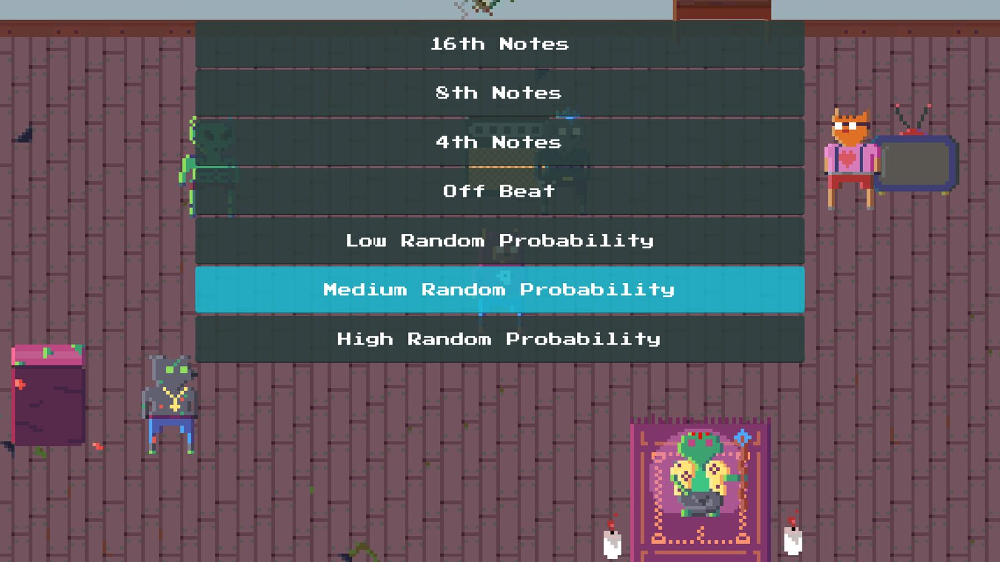
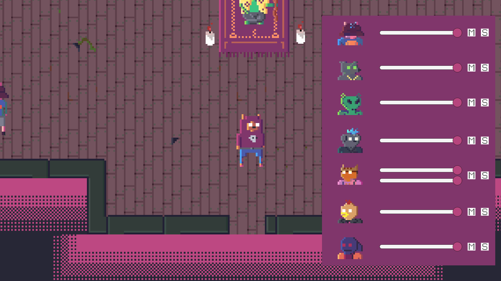
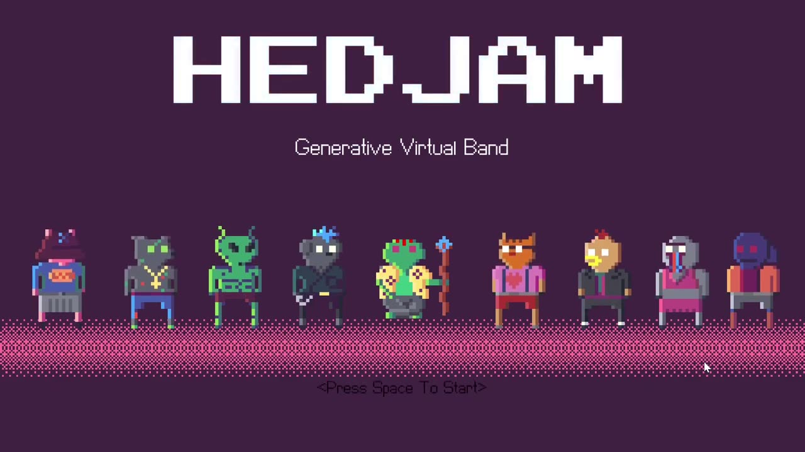
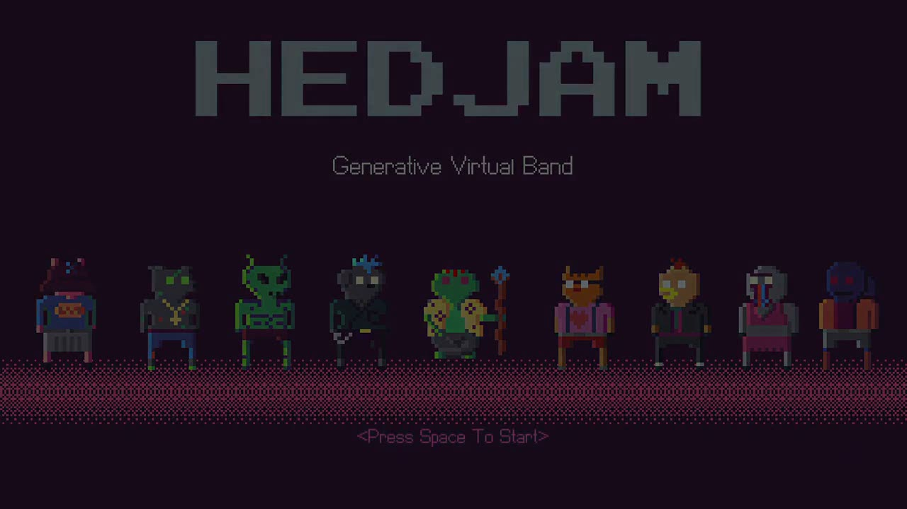

HEDJAM - A Generative Virtual Band
Authors
Nicky Hall, Digital media Artist.
PubPub Link
https://nime.pubpub.org/pub/nk00zhh4/draft?access=xave9buq
Abstract
HEDJAM is Generative Virtual band software. The player character interacts with a variety of characters, whose branching dialogue choices alter the outcomes of a procedural music engine. Each character controls different elements, all processed live. Through these choices, the user sits along side the virtual performers, rather than being in control of music generation. HEDJAM is designed to be used for streaming and projection performances. The user can control:
· Global parameters (scale, tempo, key etc.)
· Live drum synthesis
· Bass riffs and patterns
· Synthesiser chords and melodies
· Live sampling
· MIDI / udp output
· Bytebeat style noise generation
HEDJAM aims to decontextualize western ideals of music software for performance. Western tradition places the emphasis on the performer, their virtuosity and identity. HEDJAM places the user along side the machine, making executive decisions but fundamentally not being solely responsible for the musical outcome.
HEDJAM also skews identity in music performance by having a player character as the focus for the audience rather than the human performer themselves.
HEDJAM is also intentionally hackable. The generative music engine is written in Pure Data and is accessible for users to introduce more individualised ideas of music generation.
Requirements
In order to demonstrate HEDJAM, it can be presented live as a video stream. A demo of the program in use will be streamed, as well as a tour of the Pure Data patches running in the background.
Participants can download the software and play along as the program is explored.
Program Description
HEDJAM has two primary components. The front end, which includes the game elements (sprites, animation, dialogue etc.) is made in Unity3D. Dialogue choices result in functions sending bangs, symbols and floats to Pure Data using an asset called LibPDIntegration. The Pure Data patches run in the background and functions are called, sending the required data to be received by Pure Data.
The music engine has a patch for each virtual band member. These are abstractions in a master patch that receives data from the front end. Global parameters are accessible by all band member patches.
Promotional Material


Splash screen


Band member dialogue


Options for high hat patterns


The HEDJAM mixer

▶HEDJAM Promo

▶Quick HEDJAM session
Acknowledgements
Nicky would like to thank the Ballarat Synthesiser Enthusiasts for providing the opportunity to test HEDJAM’s performability and Alex Hall, Marcus Barnfeld & Josh Loper for play testing.